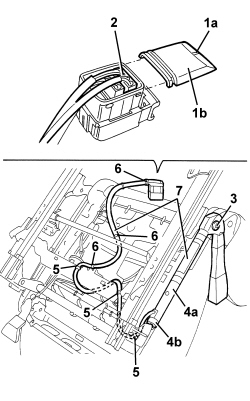

7065A24 ANCHORAGE LINK WITH PRETENSIONER FOR ONE FRONT SEAT BELT LH OR RH R R
- Path
- Procedures > 70 FITTINGS > 7065 SAFETY BELTS AND ACCESSORIES > 7065A FRONT SAFETY BELTS > 7065A24 ANCHORAGE LINK WITH PRETENSIONER FOR ONE FRONT SEAT BELT LH OR RH R R
- Kind
- repair procedure (removal / refitting; the operation number is the code)
- Applies to
- all engines; all production periods
- Interactive page
- https://sloeber94.github.io/elrnDB/alfa/159/en/#/939011385
Applies to: all engines; all production periods
 Removing
Removing
 Refitting
Refitting- Extract the electronic key.
- Disconnect the battery leads and insulate them.
- Wait for 10 minutes before continuing.
Op. 7045A10 FRONT SEAT (ONE), LEFT OR RIGHT - R.R.
1. Release retainer (1a) and remove connector cover (1b), moving it in the direction shown by the arrow.
2. Detach the electrical connection for the anchorage link with pretensioner.
3. Undo the bolt.
4. Move anchorage link with pretensioner (4a), releasing retainer (4b).
5. Release the wiring retainers.
6. Cut the wiring retaining bands.
7. Recover the anchorage link with pretensioner and braid assembly.

Applies to: all engines; all production periods
- Place the pretensioner in the special cupboard, resting it on a free surface.
Applies to: all engines; all production periods
Refitting
Removing- Check that the anchorage link with pretensioner assembly is not damaged.
1. Position the anchorage link with pretensioner engaging the retainer.
2. Tighten the bolt.
Component | Fastening | dia | Value (daNm) | Validity |
|---|---|---|---|---|
SEAT BELT PRETENSIONER | Bolt | - | 3.6 ÷ 4.4 |
3. Secure the electrical connection for the anchorage link with pretensioner.
4. Place the connector cover back in position and engage the retainer.
5. Fit the retaining bands on the wiring.
6. Engage the wiring retainers.

Applies to: all engines; all production periods
Op. 7045A10 FRONT SEAT (ONE), LEFT OR RIGHT - R.R.
- Use an Examiner to check that the system has not acquired errors during the operation.